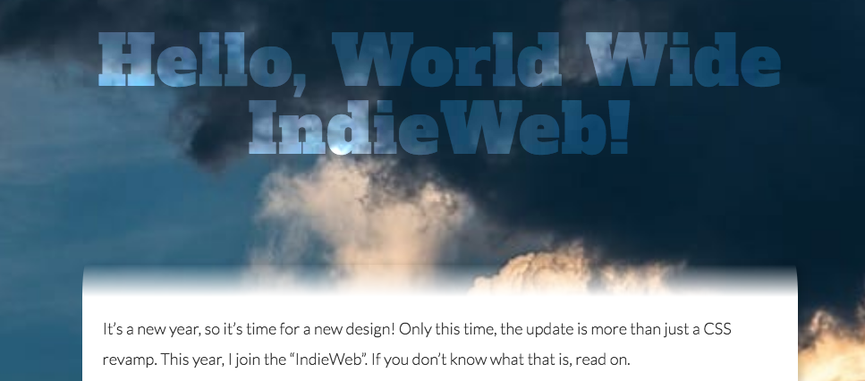
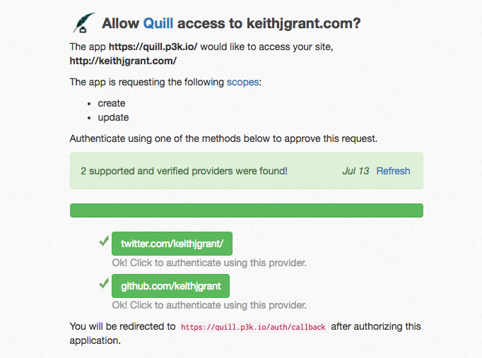

keithjgrant.com
Intercontinental Exchange
CSS in Depth, Manning Publications (2017)
What happened to
blogs?


Why social networks?
- Quick & easy signup
- Better UI
- Large number of users
- Short-form content
We lovehate our social networks
dear all social media platforms
— monk (@veshenjukkel) September 11, 2017
i only ever want to get my feed in chronological order
that's it
please arrange this
thanks
-monk
Problems
with social networks
- Little control
- Don’t own your data
- Requires account on each network
- Virtually no cross-compatability
- Neglect of personal & corporate websites
TLDR: not a blog
Attempts to
unseat
Facebook/Twitter fail
- Buzz
- Ello
- Diaspora
- Ping
- Mastodon
Another social network clone is not the answer
The
“IndieWeb”
Grassroots movement
→
Formalized standards
→
W3C Specifications
Return to the
original vision
of the web

Multiple pieces to the puzzle
- Microformats
- Webmentions
- IndieAuth
- Micropub
- Syndication
- ...
Adopt incrementally
IndieWeb wiki/documentation:
indieweb.org
Get your
own site
One central location for your
broader online presence
Put all your content on your site
- Articles
- Notes
- Replies
- Likes
- Reposts
Microformats
Ensures markup is
machine-parsable
Example microformat 2 markup
<header class="h-card">
<a class="p-name u-url" href="http://keithjgrant.com">
Keith J. Grant
</a>
<img class="u-photo" src="/images/keithjgrant.jpg" alt="Photo of Keith" />
<div class="bio-links">
<p>Atlanta, GA<br>United States</p>
<dl>
<dt>Twitter</dt>
<dd><a href="https://twitter.com/keithjgrant/" rel="me">@keithjgrant</a></dd>
<dt>Github</dt>
<dd><a href="https://github.com/keithjgrant" rel="me">keithjgrant</a></dd>
<dt>Author</dt>
<dd><a href="https://www.manning.com/books/css-in-depth">CSS in Depth</a></dd>
</dl>
</div>
</header>
Microformat vocabularies
- h-card
- h-entry
- h-event
- h-adr
- h-product
- h-recipe
- ...
Microformat properties
Describe parts of an “h-*” item
- p-name
- p-summary
- p-author
- p-category
- p-geo
- ...
- e-content (“entry”)
- u-url (refers to href)
- u-email
- dt-published (“date”)
h-card example
<header class="h-card">
<a class="p-name u-url" href="http://keithjgrant.com">
Keith J. Grant
</a>
<img class="u-photo" src="/images/keithjgrant.jpg" alt="Photo of Keith" />
<div class="bio-links">
<p>Atlanta, GA<br>United States</p>
<dl>
<dt>Twitter</dt>
<dd><a href="https://twitter.com/keithjgrant/" rel="me">@keithjgrant</a></dd>
<dt>Github</dt>
<dd><a href="https://github.com/keithjgrant" rel="me">keithjgrant</a></dd>
<dt>Author</dt>
<dd><a href="https://www.manning.com/books/css-in-depth">CSS in Depth</a></dd>
</dl>
</div>
</header>
h-entry example
<div class="post-body__item h-entry">
<div class="post-preview">
<div class="post-preview__date metadata">
<a class="u-url dt-published" href="http://keithjgrant.com/notes/2017/03/48158/">
17 Mar 2017 13:22:38
</a>
</div>
<div class="post-preview__content">
<div class="content e-content show-embeds">
<p>Developers somehow acquired the idea that CSS should be easy. Like, learn
in a weekend easy.</p>
<p>CSS isn’t like that. Nobody <em>in the world</em> knows all of CSS. You
need to commit to learning it just as you do conventional programming.</p>
</div>
</div>
</div>
</div>
Don’t need to memorize them all
Webmentions
Tracking the conversation
Notify a page when you link to it
- Simplification of older “pingback”
- Send POST to a specified endpoint
W3C Recommendation Spec (2017)
Specify your webmention endpoint in <head>
<link rel="webmention" href="https://yoursite.com/webmention" />
Webmention process
- Create source document that mentions the target
- Find webmention endpoint for target
(<link rel="webmention">) - Notify endpoint of source url & target url
- Endpoint verifies source url
Reply, like, repost…
Specified by microformats in the source document
<a href="https://example.com/target/url" class="u-in-reply-to">
a post on example.com
</a>
</p>
<div class="e-content">…</div>
</div>
<p>Liked <a href="https://example.com/target/url" class="u-like-of">
a post on example.com
</a></p>
<p>Reposted <a href="https://example.com/target/url" class="u-repost-of">
a post on example.com
</a></p>
Implementations
- micro.blog
- withknown.com
- Wordpress plugin
- Drupal plugin
- other plugins
- webmention.io service
- Many open source libraries
webmention.io service
Useful for static sites
IndieAuth
Simplified version of old OpenID
OpenId → RelMeAuth → IndieAuth
rel="me" links in h-card…
<a href="https://twitter.com/keithjgrant/" rel="me">@keithjgrant</a>
<a href="https://github.com/keithjgrant" rel="me">keithjgrant</a>
…rel="me" links in OAuth profile
Two-way verification
OAuth login with my twitter account
authenticates me as owner of my website
Specify your auth endpoint in <head>
<link rel="authorization_endpoint" href="https://indieauth.com/auth" />
<link rel="token_endpoint" href="https://tokens.indieauth.com/token" />

Micropub
Open API standard for
publishing
to your site
- Publish posts, comments, photos, etc.
- Post to your site from a third-party client
- Update/delete posts
W3C Recommendation Spec (2017)
1. Specify your micropub endpoint in <head>
<link rel="micropub" href="https://yoursite.com/micropub" />
2. Login to micropub client using IndieAuth
3. Post content
Some micropub servers
- micro.blog
- withknown.com
- Wordpress plugin
- Drupal plugin
- Some open source libs
Some micropub clients
- Quill
- Unicyclic
- micro.blog iOS app
- micropublish.net
- Omnibear browser extension
Syndication
Post to your site first.
Syndicate to Twitter/Facebook/Instagram
POSSE
Publish on your Own Site, Syndicate Elsewhere
brid.gy
Bridges your IndieWeb site with social media silos
Telegraph
(sends webmentions)
brid.gy
(monitors social network activity)

IndieWeb Generations
Each Generation should be best at explaining IndieWeb to the next Generationindieweb.org
IndieWeb Generations Theory
- Highly technical; comfortable programming
- Comfortable with web; sees benefit of backfeed technology like Bridgy
- Comfortable with 3rd party hosts like Wordpress; can register own domain name
- Nontechnical; needs turnkey solution
It’s still for fairly technical people
…but can work in conjunction
with mainstream social media
If you don’t want to put in too much work:
- Micro.blog
- WithKnown.com (more education focused recently)
- Wordpress plugin
If you want more control:
Build incrementally. Lots of open source libs!
- Use microformats (use a validator)
- Add webmention endpoint
- Syndicate/backfeed with Bridgy
- Setup Micropub endpoint
- Automate sending of webmentions
- Explore indieweb.org
W3C Social Web WG
- Webmention
- Micropub
- WebSub (formerly PubSub/PubSubHubbub)
- Activity Streams
- ActivityPub
- Social Web protocols
Off topic!
Intercontinental Exchange
Now hiring: Sr. Web Developer (front-end)
- JavaScript (ES6+)
- React
- Redux
- Node

CSS in Depth eBook giveaway
- Tweet with hashtag #CSSinDepth
(1 winner chosen randomly) - Send reply webmention to keithjgrant.com/notes/connect-tech
(2 winners - first webmentions received)
See you on the IndieWeb!
Slides: keithjgrant.com/talks